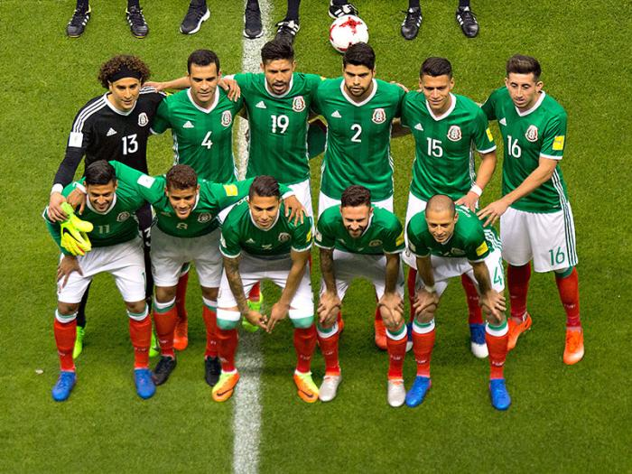

A seleção mexicana participou de sua 16ª edição da Copa do Mundo de futebol em 2018. Em 2022 Fará sua 17° participação na edição que será no Qatar.
Os melhores desempenhos da seleção mexicana foram em 1970 e 1986 quando o México chegou às quartas-de-final.
| Data/Hora | Estádio | Adversário |
|---|---|---|
| 22 nov 2022 / 13h00 | Estádio 974 (Estádio Ras Abu Aboud) | Polônia |
| 26 nov 2022 / 16h00 | Estádio Nacional de Lusail | Argentina |
| 30 nov 2022 / 16h00 | Estádio Nacional Lusail | Arábia Saudita |